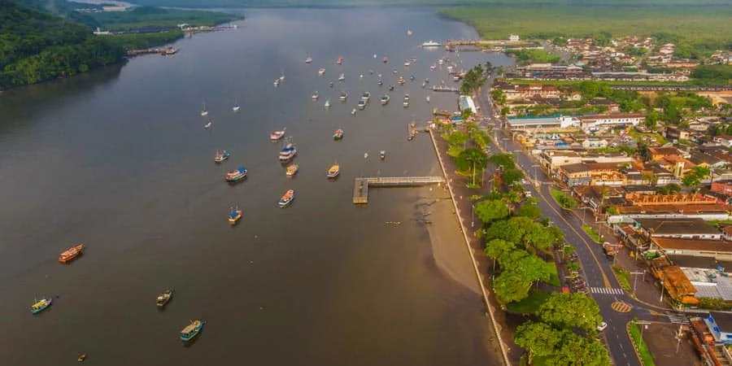

Alguns dos meus hobbys são:
Jogar Video GameSempre gostei muito de video game, meu primeiro contato foi aos 4 anos( de acordo com meus pais), joguei Super Mario no Ds e desde então continuo jogando.
Sobre a pescaria eu puxei do meu pai, ele sempre me levava quando eu era criança e acabei gostando bastante, Geralmente vamos para bertioga pescar pois temos uma casa lá, pescamos no píer ou no mar.
Comecei a dirigir recentemente para práticar minha direção no carro do meu falecido vô, é um fox 2006 que tem 2 portas, meu pai sempre está comigo, e toda vez que eu estou dirigindo eu me divirto bastante pois é algo que também sempre quis fazer.
A programção veio acredito eu por causa do meu interesse em todo tipo de tecnologia, e como gosto bastante decidi fazer engenharia da computação, e não decidi fazer ADS pois queria ser engenheiro também, seguindo meu pai, meus primos e meu irmão(Inclusive meu irmão se formou em agronomia na facens!).
Píer de Bertioga